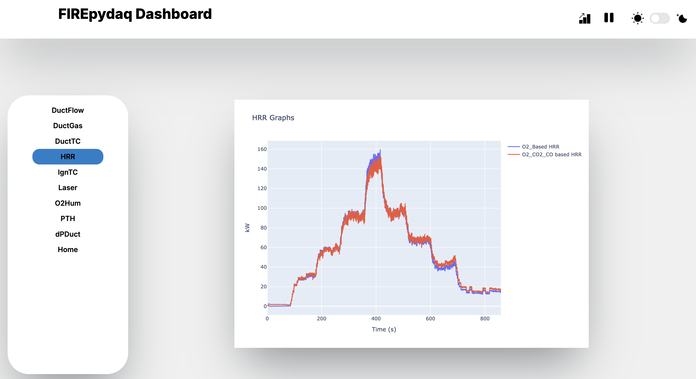
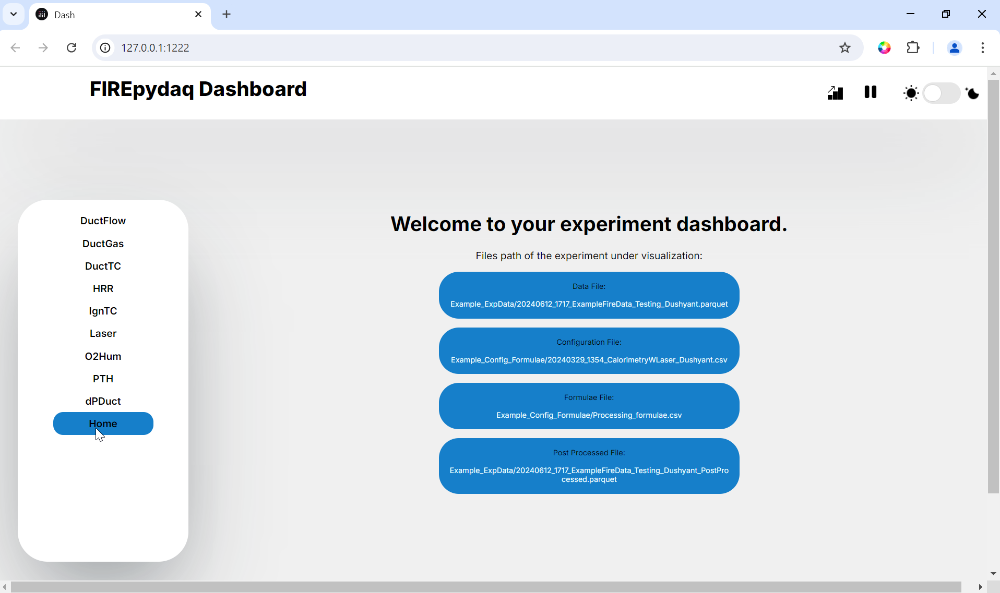
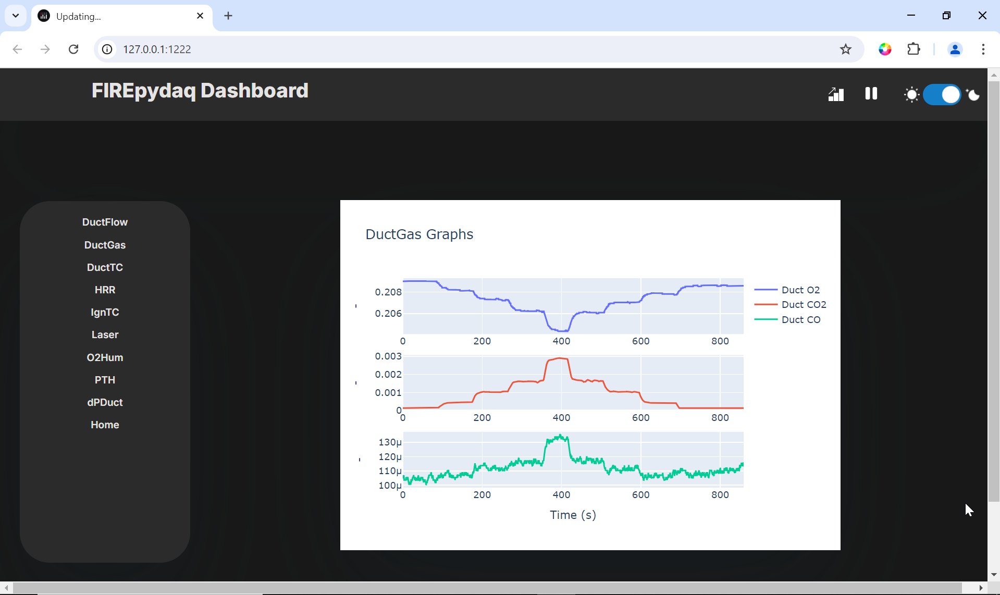

Example: Dashboard Usage¶
This is an example of how to use the dashboard to visualize data derived from acquisition from the NI system and added devices. Here, the usage of the dashboard as a live visualization of the data collected from the acquisition application, as well as a standalone way to visualize and post-process the parquet files, is discussed.
1. With Acquisition¶
As mentioned in Acquisition, the ‘Display All’ or ‘Display Dashboard’ options can be chosen to spin out a live dashboard. This dashboard uses the saved data from the parquet file, a configuration file to create plot layouts and optionally a formulae file to visualize obtained data by performing certain operations.
Note
Dashboard opens as a parallel process, not interfering acquisition, only when saving is initiated from the acquisition GUI.
See acquisition usage example for how the dashboard is spawned during acquisition.
2. As a Standalone Dashboard¶
To use parquet files, configuration, formula files to run the dashboard, paste the following lines of code in an empty python file.
Hint
Use formulaepath = '' as the keyword argument if no formula parsing is desired.
If you wish to use a .json file written out during teh saving operation for a previous experiment, simply replace the keyword arguments as follows:
To learn more about the usage of keywords, please refer to the post-processing example and PostProcessing documentation.
{kind=link}
3. Layout¶
The layout is built using the common columns of the configuration file and formula file. For more information on how to construct those files refer to examples for these files.
Firstly, the
Chartcolumn is used to organize the total number of graph pages on a website.All entries with the same
Chartname fall under the same graph.Layoutdecides the number of plots on a single graph.Positionindicates the position of the particular plot within the graph. For example, aLayoutentry of 2 andPositionof 1, indicates the top (first) plot among the two plots on the graph.Labelis used by the formula file to call for values of a specific field.Lastly,
Legendis the name used in the legend to distinguish between multiple values plotted on the same plot and ‘Processed Unit’ for indicating the Y-axis units.
Note
Currently, only a layout of vertically distributed plots is generated (i.e. one column and N number of rows). This will be extended in future releases to allow for a tabular display of desired plots.
4. Other functionalities:¶
This section offers insight into some other functionalities offered by the dashboard.
General¶
The user interface is responsive and can be used on varying desktop or laptops. However, they are not yet suited for phones. The graphs on the dashboard are also interactive in nature and can be zoomed in on for a closer, more detailed look. However, the axes extents are reconfigured every 3 seconds (See Update Interval), during the regular dashboard update.
Home Page¶
The home page is the page the website lands on first after loading. It has a few fields indicating the locations of the parquet, configuration, formula and post processed files that are used up by the application or created by it.
{kind=link}
Update Interval¶
The update intervals for each of the graphs are set to 3 seconds. This means that every 3 seconds data is read from the parquet files, processed, and displayed.
Pause updates¶
On the title bar, the tiny pause button can be used in order to pause the dashboard from updating the dashboard at any given point in time. To resume the dashboard, click the play button.
Saving graphs¶
In order to save all plots, simply click on the graph button. All the graphs present will be saved in .html format in the same directory as the parquet files with the following name: [ParquetFileName]_YYMMDD_HHMMSS_[ChartName].html.
The graphs also have a camera icon used to capture the individual graph.
Display Modes¶
The toggle button on the title bar may be used to switch between light and dark modes such as shown below.
{kind=link}
5. Logger¶
The DashboardError.log contains all the output printed by the program and while the server was running. It serves as a means to understand the issues or updates that occur through the course of the application.
6. Exit¶
It is recommended to gracefully stop the dashboard when run via acquisition GUI.
Important
Stop saving from the acquisition GUI for graceful termination of the dashboard process and allow re-initiation of the dashboard for next iteration of acquisition and saving.
Warning
Use “Ctrl + C” to halt the server ONLY when you run the dashboard in standalone mode.
Hint
If you do not need the dashboard process at all, not selecting that as a display option will reduce potential conflict between saving the data from acquisition GUI and using the data from the saved file for the dashboard.
Although this doesn’t interfere with acquisition, be advised that this might create some warnings during the dashboard updates.